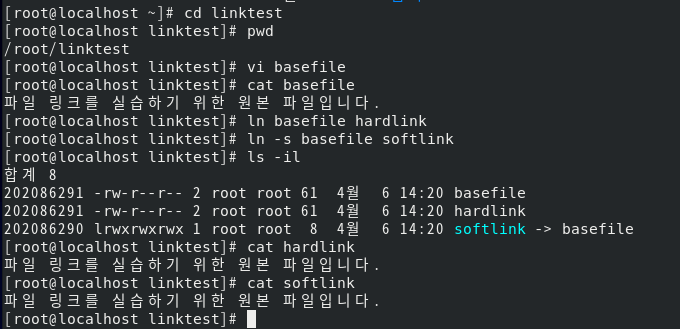
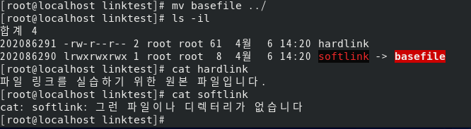

하드링크와 심볼릭 링크 하드
파일의 링크에는 하드 링크와 심볼릭 링크가 있으며,
하드 링크가 가리키는 inode블록은 Data 블록의 원본 파일 데이터를 가리킨다. 이 inode는 원본 파일이 가리키는 곳과 동일함.
심볼릭 링크 파일이 가리키는 inode블록은 Data 블록의 원본 파일 포인터를 가리킨다. 이 원본 파일 포인터는 원본 파일의 디렉터리를 가리킨다.
inode란? 파일이나 디렉터리의 여러 정보(해당 파일의 소유권/허가권, 파일 종류, 파일의 실제 데이터 위치)가 담긴, 리눅스/유닉스 파일 시스템에서 사용하는 자료구조
- 명령어
1
2
3
4
5
#하드 링크
$ ln 링크대상파일이름 링크파일이름
#심볼릭 링크
$ ln -s 링크대상파일이름 링크파일이름
실습

ls -li는 inode의 번호를 맨 앞에 출력하도록 하는 옵션이다.
hardlink와 원본 파일은 같은 inode를 가리키는 것을 확인할 수 있고, 심볼릭 링크는 다른 inode 번호를 가지는 것을 확인할 수 있다.

원본 파일을 이동시킨 후 softlink와 hardlink를 각각 확인해보면, 구조의 차이에 대해 이해할 수 있다. (softlink는 원본 파일 경로를 가리킴)